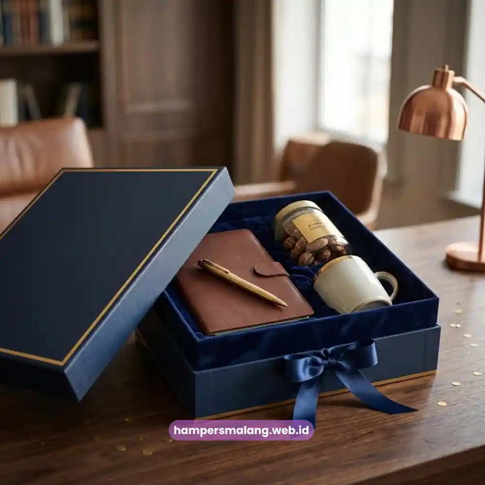

Hampers klien perusahaan adalah paket hadiah korporat yang dikirimkan kepada klien sebagai bentuk apresiasi sekaligus strategi menjaga hubungan bisnis jangka panjang.
Pemberian hampers yang tepat mampu memperkuat loyalitas klien, membangun citra profesional, dan membuka peluang kerja sama yang lebih erat.
Melalui hampers eksklusif dari Hampers Malang, perusahaan dapat menyampaikan apresiasi dengan cara yang berkesan, elegan, dan penuh makna.
- Hampers klien perusahaan memperkuat hubungan bisnis dan loyalitas jangka panjang.
- Pemilihan isi hampers sebaiknya mencerminkan profesionalisme dan nilai perusahaan.
- Waktu pengiriman yang tepat meningkatkan dampak emosional hampers bagi klien.
- Kemasan eksklusif menjadi representasi identitas brand di mata klien.
- Hampers Malang menyediakan solusi hampers korporat yang siap dipesan kapan saja.
Apa Itu Hampers Klien Perusahaan dan Mengapa Penting?
Hampers klien perusahaan adalah rangkaian hadiah yang dikemas secara khusus untuk diberikan kepada mitra bisnis, pelanggan korporat, atau klien strategis.
Berbeda dengan hadiah personal, hampers ini dirancang untuk mencerminkan citra profesional perusahaan sekaligus menyampaikan rasa terima kasih atas kepercayaan yang telah diberikan.
Kehadiran hampers dalam dunia bisnis bukan sekadar formalitas.
Ia menjadi jembatan komunikasi non-verbal yang menunjukkan bahwa perusahaan menghargai setiap relasi yang terjalin.
Klien yang merasa dihargai cenderung lebih terbuka untuk melanjutkan kerja sama, memberikan rekomendasi, atau bahkan memperluas cakupan proyek di masa mendatang.
Selain itu, hampers klien perusahaan juga berfungsi sebagai media branding yang halus.
Kemasan, pemilihan produk, hingga kartu ucapan yang disertakan dapat memperkuat identitas visual perusahaan tanpa terkesan berlebihan atau memaksa.
Mengapa Hampers Klien Perusahaan Menjadi Strategi Bisnis yang Efektif?
Hampers klien perusahaan efektif karena menyentuh aspek emosional dalam hubungan bisnis yang sering kali didominasi oleh transaksi formal.
Ketika sebuah perusahaan meluangkan waktu dan sumber daya untuk mengirimkan hampers, klien akan menangkap pesan bahwa hubungan tersebut lebih dari sekadar kontrak kerja.
Dalam praktiknya, banyak perusahaan menjadikan hampers sebagai bagian dari strategi customer relationship management.
Pengiriman hampers pada momen tertentu, seperti pergantian tahun atau pencapaian target kerja sama, membantu menjaga top of mind awareness klien terhadap perusahaan.
Hal ini penting terutama di industri dengan tingkat persaingan tinggi, di mana loyalitas klien dapat menjadi faktor penentu keberlangsungan bisnis.
Lebih jauh, hampers yang dikemas dengan baik juga dapat menjadi bahan pembicaraan positif di lingkungan kerja klien, sehingga secara tidak langsung memperluas eksposur nama perusahaan pemberi hampers.
Baca Juga: Hampers Hari Raya untuk Klien Bisnis dan Cara Menjaga Kesan Profesional
Bagaimana Memilih Isi Hampers Klien Perusahaan yang Tepat?
Memilih isi hampers klien perusahaan yang tepat membutuhkan pertimbangan matang terhadap karakter penerima, nilai perusahaan, dan pesan yang ingin disampaikan.
Produk yang dipilih sebaiknya mencerminkan kualitas dan ketulusan, bukan sekadar kuantitas.
Beberapa perusahaan memilih kombinasi produk kuliner premium seperti kopi, teh, atau cokelat berkualitas tinggi yang dapat dinikmati bersama tim klien.
Ada pula yang memilih perlengkapan kerja eksekutif seperti notebook, pena, atau organizer meja yang fungsional sekaligus elegan.
Pendekatan yang paling tepat adalah menyesuaikan isi hampers dengan profil industri klien, sehingga hadiah terasa relevan dan personal.
Kapan Waktu Terbaik Mengirim Hampers kepada Klien?
Waktu pengiriman hampers memiliki peran penting dalam menentukan seberapa besar dampak emosional yang diterima klien.
Mengirim hampers pada momen yang tepat, seperti akhir tahun, perayaan hari besar, atau pencapaian proyek bersama, akan membuat hadiah terasa lebih bermakna dibandingkan pengiriman yang dilakukan tanpa alasan jelas.
Selain momen seremonial, perusahaan juga dapat mempertimbangkan pengiriman hampers sebagai bentuk ucapan selamat atas pencapaian klien, seperti pembukaan cabang baru atau perayaan ulang tahun perusahaan klien.
Ketepatan waktu ini menunjukkan bahwa perusahaan benar-benar memperhatikan perkembangan mitra bisnisnya.

Elemen Kemasan yang Membuat Hampers Klien Perusahaan Terlihat Eksklusif
Kemasan adalah kesan pertama yang dilihat klien sebelum membuka isi hampers.
Kemasan yang rapi, elegan, dan konsisten dengan identitas brand perusahaan akan meningkatkan persepsi kualitas secara keseluruhan, bahkan sebelum produk di dalamnya dinikmati.
Penggunaan warna netral dengan sentuhan warna korporat, material kemasan berkualitas, serta detail seperti pita, kartu ucapan, atau logo timbul dapat memberikan nuansa premium tanpa perlu berlebihan.
Konsistensi kemasan juga membantu klien mengenali identitas perusahaan pengirim secara langsung, sehingga memperkuat brand recall.
Kesalahan Umum dalam Memberikan Hampers kepada Klien
Beberapa perusahaan sering terjebak dalam kesalahan yang mengurangi dampak positif dari hampers yang diberikan.
Kesalahan yang paling umum adalah memilih isi hampers secara asal tanpa mempertimbangkan relevansi dengan klien, sehingga hadiah terkesan generik dan kurang personal.
Kesalahan lain adalah mengabaikan aspek waktu pengiriman, misalnya mengirim hampers terlalu mendekati momen penting sehingga terkesan terburu-buru, atau justru terlalu jauh dari momen tersebut sehingga kehilangan relevansi.
Pengelolaan anggaran yang tidak terencana juga sering menjadi masalah, di mana perusahaan mengeluarkan biaya besar namun hasil akhirnya tidak sesuai ekspektasi.
Perbandingan Hampers Klien Perusahaan Standar dan Eksklusif
Hampers standar umumnya berisi produk dengan variasi terbatas dan kemasan sederhana, cocok untuk pengiriman dalam jumlah besar dengan anggaran terkontrol.
Sementara itu, hampers eksklusif menawarkan kurasi produk premium, kemasan personal, serta sentuhan detail yang lebih mendalam, sehingga lebih tepat digunakan untuk klien strategis atau momen penting perusahaan.
Pemilihan antara kedua jenis hampers ini sebaiknya disesuaikan dengan tingkat kedekatan hubungan bisnis serta tujuan komunikasi yang ingin dicapai perusahaan terhadap klien tersebut.
Hampers klien perusahaan bukan sekadar hadiah, melainkan investasi dalam menjaga hubungan bisnis yang berkelanjutan.
Pemilihan isi, waktu pengiriman, kemasan, hingga pengelolaan anggaran perlu dipertimbangkan secara menyeluruh agar hampers benar-benar memberikan kesan positif dan profesional.
Tanya Jawab Seputar Hampers Klien Perusahaan
Hampers klien perusahaan adalah paket hadiah korporat yang diberikan kepada klien sebagai bentuk apresiasi dan strategi menjaga hubungan bisnis.
Hampers membantu memperkuat loyalitas klien, membangun citra profesional, dan menjaga hubungan bisnis jangka panjang.
Waktu terbaik umumnya bertepatan dengan momen seremonial seperti akhir tahun, hari besar, atau pencapaian penting dalam kerja sama bisnis.
Isi hampers sebaiknya relevan dengan profil klien, mencerminkan kualitas, dan disesuaikan dengan nilai profesionalisme perusahaan.
Anggaran memengaruhi jenis produk dan kemasan yang dipilih, namun dengan perencanaan yang tepat, hampers tetap dapat terlihat elegan tanpa biaya berlebihan.

Konsultasikan Kebutuhan Hampers Anda
Solusi Efisien untuk Hampers Korporat di Jawa Timur.
Ditulis oleh Tim Maroon Souvenir
Sahabat mahasiswa dan pelaku bisnis di Malang Raya. Berpengalaman menangani merchandise event kampus, instansi pemerintahan, dan hotel berbintang di Batu.